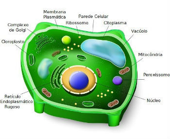
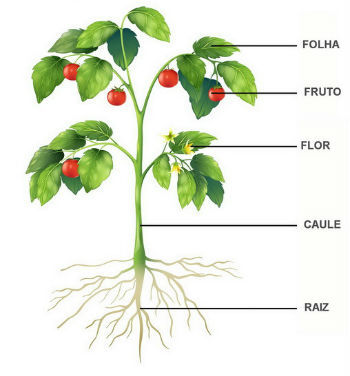
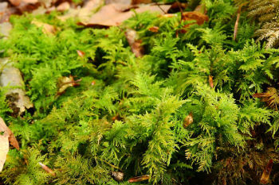
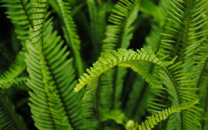
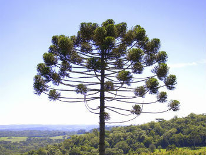
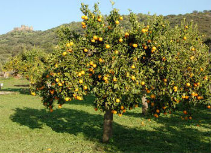

A Botânica é o ramo da Biologia que se dedica ao estudo das plantas.
O termo botânica deriva grego botané, que tem como significado “planta”.
Ela abrange a fisiologia, morfologia, ecologia vegetal e taxonomia, ou seja, todas as características, interações e funcionamento das plantas.
As principais características das plantas são:
• Células eucariontes: núcleo delimitado por membrana nuclear;
• Seres autotróficos: produzem o seu próprio alimento;
• Fotossintetizantes: realizam fotossíntese, o processo para obtenção de alimento e energia.
Célula vegetal

As plantas são constituídas pelas células vegetais. Elas diferenciam-se das células animais por possuírem vacúolos, cloroplastos e parede celular.
Os vacúolos são organelas que ocupam a maior parte do citoplasma. Eles são responsáveis por armazenar substâncias e regular a entrada de água na célula, controlando a sua turgidez.
Os cloroplastos são organelas exclusivas de células vegetais. É o local onde é encontrada a clorofila, o pigmento necessário para a realização da fotossíntese.
A parede celular dos vegetais é constituída pelo polissacarídeo celulose. Ela é responsável pela sustentação, resistência e proteção contra patógenos.
Partes da Planta

As partes da planta são: raízes, folhas, caule, flores e frutos. Cada uma delas desempenha uma função que garante a sobrevivência do vegetal.
• Raiz: Absorção e condução de substâncias. Em alguns casos, podem armazenar substâncias energéticas.
• Folhas: Responsável pela fotossíntese, respiração e transpiração.
• Caule: Sustentação e transporte de substâncias.
• Flores: Responsáveis pela reprodução.
• Frutos: Dispersão de sementes, garantindo a sobrevivência da espécie.
Algumas plantas não apresentam flores e frutos, como veremos a seguir nos grupos das plantas.
O Reino Vegetal ou Plantae inclui os seres eucariontes, autotróficos e fotossintetizantes. Ele é considerado o reino das plantas.
No Reino Vegetal podemos distinguir os grupos de plantas vasculares (com vasos condutores) e as plantas avasculares (sem vasos condutores):
• Plantas Vasculares: Pteridófitas, Gimnospermas e Angiospermas.
• Plantas Avasculares: Briófitas.
Briófitas

As briófitas representam as plantas de pequeno porte e que habitam os ambientes úmidos. O grupo é representado pelos musgos e hepáticas.
Essas plantas não apresentam tecido condutor. Assim, o transporte das substâncias ocorre célula a célula, através de difusão.
A reprodução pode ser de forma assexuada ou sexuada. A maioria das espécies é dioica, ou seja, há plantas femininas e masculinas. As demais são monoicas, isto é, hermafroditas.
A reprodução sexuada é dependente da água que transporta os anterozoides masculinos até a planta feminina.
Pteridófitas

As pteridófitas são plantas que possuem vasos condutores e sem sementes. São representadas pelas samambaias, avencas e cavalinhas.
A reprodução pode ser de forma assexuada ou sexuada. Na reprodução assexuada ocorre o brotamento. Enquanto a sexuada depende da água para o encontro dos gametas masculinos e femininos.
Gimnospermas

As gimnospermas são plantas que apresentam sementes, porém não produzem frutos. A característica do grupo é apresentar as sementes "nuas", ou seja, não envolvidas por fruto.
A planta mais conhecida desse grupo é a araucária ou pinheiro-do-paraná.
A estrutura reprodutiva do grupo é o estróbilo que pode ser masculino ou feminino. Os estróbilos femininos são conhecidos como pinhas.
Angiospermas

As angiospermas são as plantas mais complexas que existem na natureza. Elas são as únicas que apresentam sementes, flores e frutos.
Esse é grupo mais numeroso e diversificado da natureza, com mais de 250 mil espécies.
A flor é a estrutura reprodutiva das plantas angiospermas. O fruto é o resultado do desenvolvimento do ovário da flor, após a fecundação. O fruto protege a semente que dará origem a uma nova planta.
A reprodução das angiospermas depende da polinização, que representa a transferência do grão de pólen da parte masculina da flor para a parte feminina.